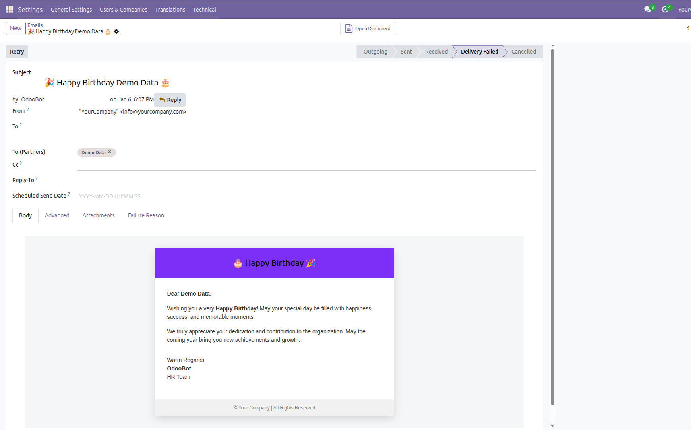

Inom Employee Birthday Wishes is a professional Odoo solution designed to automatically send birthday greeting emails to employees using a scheduled cron job. The module helps organizations improve employee engagement by ensuring that no birthday is ever missed.
With this module installed, employees automatically receive personalized birthday wishes on their special day. The process runs silently in the background using Odoo’s scheduler, requiring no manual intervention.
Manually tracking employee birthdays can be time-consuming and error-prone. Inom Employee Birthday Wishes automates the entire process, ensuring timely and consistent birthday greetings while reducing administrative workload.
1. Configure the employee’s Date of Birth and Work Email in the employee form.
2. The scheduled cron job runs daily in the background.
3. On the employee’s birthday, a personalized birthday email is sent automatically.
Below are preview images of the module configuration and email template.

For support, bug reports, or customization requests, please contact us:
Email: info@inomerp.in
We provide a one-time setup and installation service completely free of cost on any Odoo-supported server. Our experienced technical team ensures proper installation, configuration, and deployment so you can start using the module smoothly without any technical complications.
Important Note:
Free support is provided for issues caused by the standard Odoo source code
related to this module. Any issues arising due to third-party modules,
custom developments, or compatibility conflicts are outside the scope of
free support and may be chargeable.
For demos, customization, or enterprise support, connect with our team:
https://www.inomerp.in/contactus